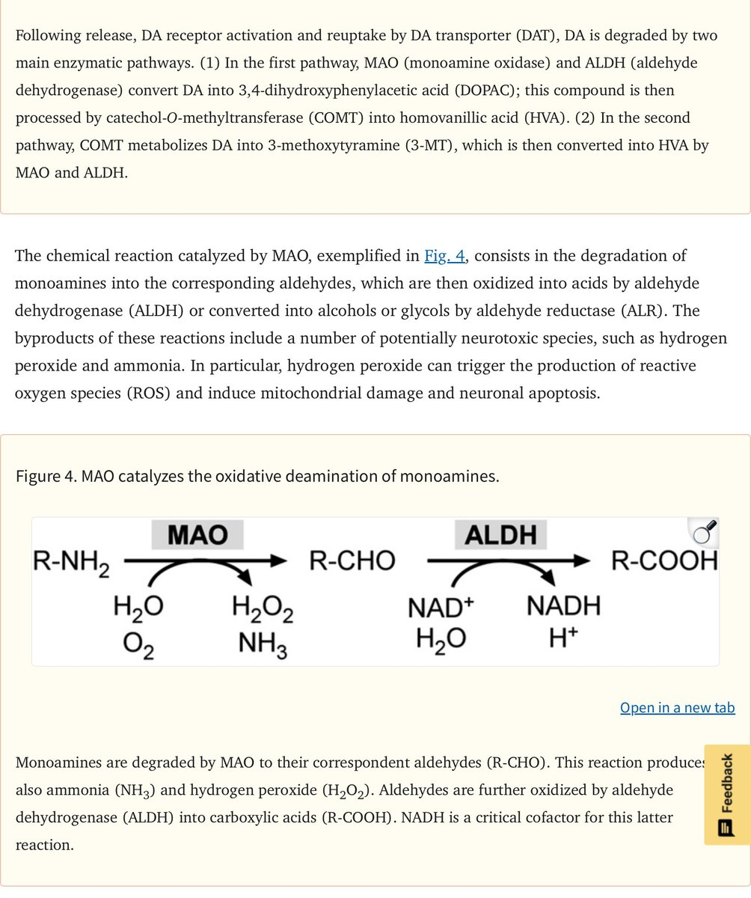

鼠尾草～🌿
@SalviaSWC
@Prechaska 没错，但是这一切的前提是，MAOI不会和另一种导致单胺浓度增加的物质同时大量存在🤓☝

Nutilité
@Prechaska
单胺氧化酶（MAO）在降解单胺类物质时，其反应过程的副产物包括过氧化氢等具有神经毒性的物质，过氧化氢能触发活性氧（ROS）的生成，进而导致线粒体损伤与神经元凋亡。因此，单胺氧化酶抑制剂（MAOI）抑制MAO诱发的催化过程，使生成的过氧化氢减少，从而实现对神经元和线粒体的保护。 https://t.co/gZN2BgqCOW